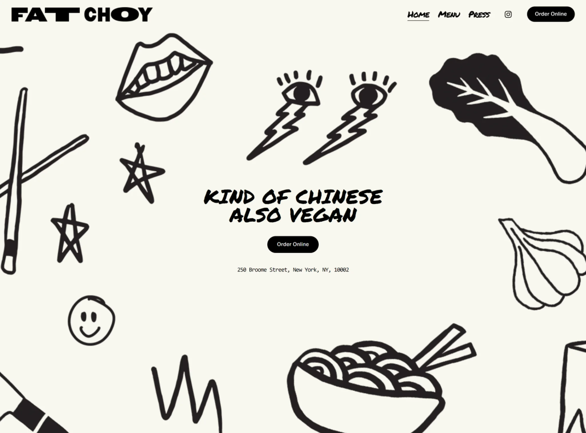
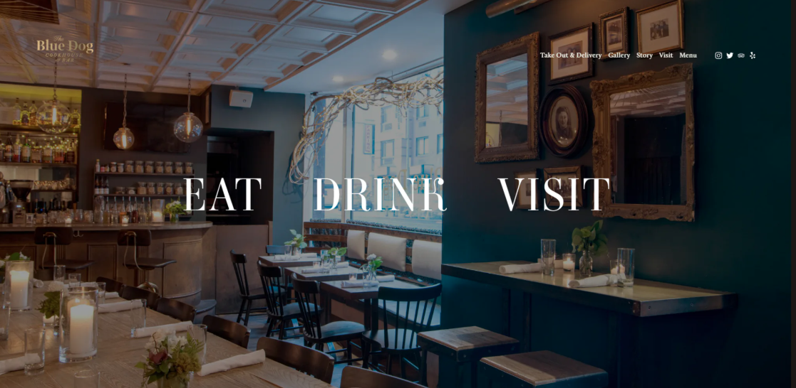
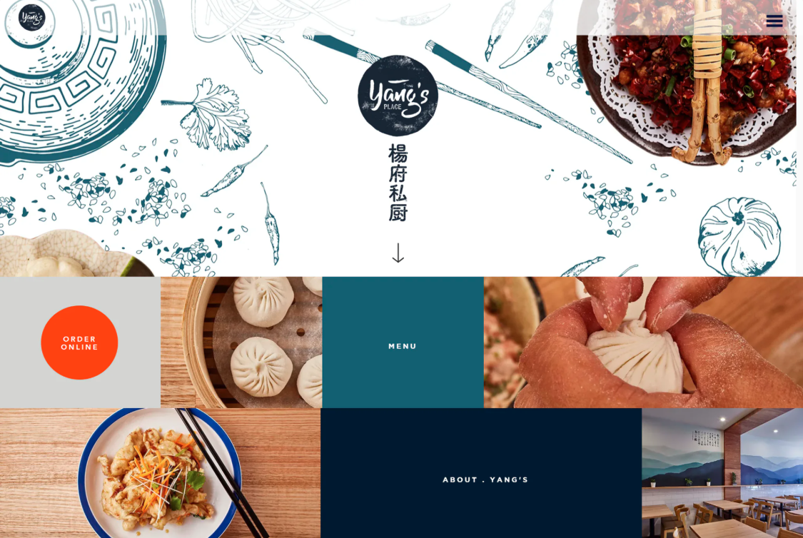
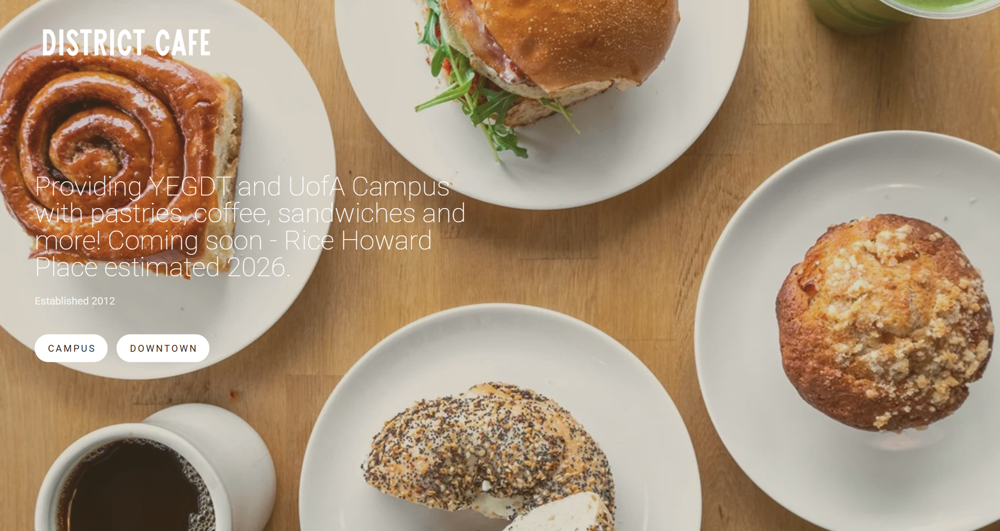
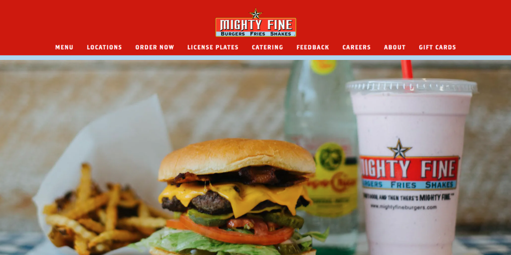
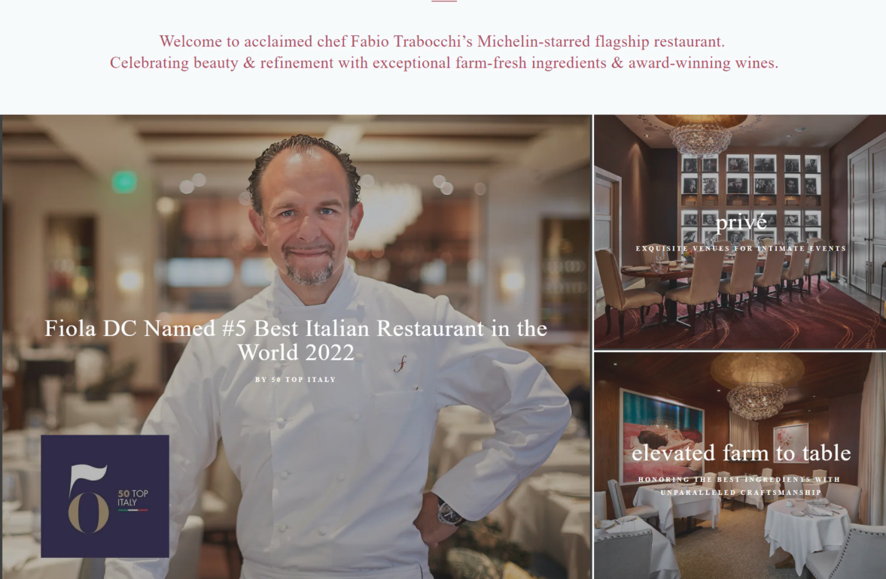
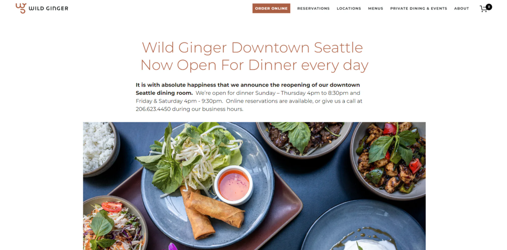

Selected Work
2023 – 2026
Fat Choy NYC
A modern Chinese vegan concept featuring bold, comfort-driven dishes like mushroom sloppy buns and rice rolls — blending playful flavors with a casual, street-inspired dining experience.
View project
Feather & Bone
A premium butcher, grocer, and dining concept sourcing high-quality meats directly from farmers worldwide — combining retail, e-commerce, and all-day dining into one seamless food experience.
View project
High Level Diner
A family-owned café blending Argentine, Armenian, and Italian influences — creating a warm neighborhood space centered around coffee, brunch, and community gathering.
View project
Blue Dog
A neighborhood restaurant offering a relaxed dining experience with a focus on comfort food, takeout, and casual gatherings in a warm, welcoming setting.
View project
Yang's
A family-owned Chinese restaurant built on years of culinary experience — blending traditional techniques with refined flavors inspired by five-star hotel kitchens and modern dining.
View project
District Cafe
A local Edmonton café and bakery serving fresh pastries, coffee, and sandwiches — focused on speed, quality, and everyday convenience for busy city life.
View project
Mighty Fine Burgers
An Austin-based burger concept focused on fresh, made-to-order food and high-quality ingredients — delivering classic Texas burgers with a strong emphasis on service and consistency.
View project
Fiola DC
A Michelin-starred Italian restaurant by Chef Fabio Trabocchi, offering refined seasonal tasting menus rooted in regional Italian traditions and elevated with world-class ingredients and wine.
View project
Wild Ginger
A long-standing Asian restaurant inspired by the flavors of China and Southeast Asia — offering a shared dining experience built around bold spices, cultural tradition, and vibrant, family-style service.
View project